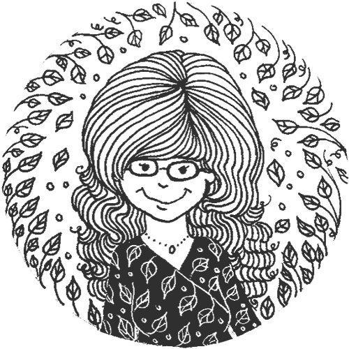
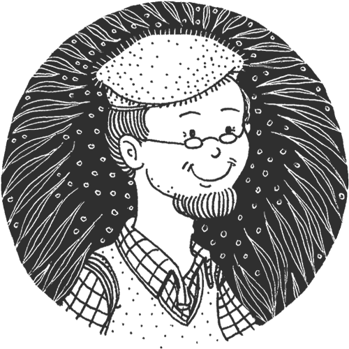
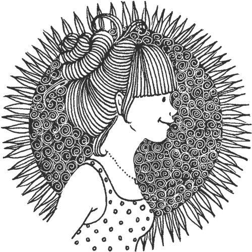

Mission #
To craft web things that are accessible, user-centred and pretty.
Hi, my name is Patricia C. Montero. I'm a Venezuelan web designer based in Montreal, and this is my design system.

This design system is a work in progress. To me, it's a learning tool as well as a way to define my brand. It covers three sections:
- Brand foundations. On the strategy behind my creative work.
- Style guide and assets. About my logo, typography, colour palette and other related matters.
- Components and code. On the different pieces used to communicate and the way of handling them.
Why do I need a design system?
- To learn. The best way to understand something is to do it by myself.
- To remember. I'm prone to neglect some of the reasoning behind my design process.
- To optimize. It'll be a reference for all my design work.
Principles #
These are the notions that guide my professional ventures. I adopted them to keep my image consistent and close to myself.
Openness
I've recently embraced accessibility, and it soon became one of my core beliefs as a designer. I hope that everyone feels welcome around my work regardless of their abilities.
Curiosity
Always learning, I stay motivated towards a new idea or project. I intend to keep pace with the endless evolution of web design.
Happiness
I cherish the life I have, and I try to express that in my work.
Simplicity
I tend to over-complicate things, yet I always end up seeing that simpler is better.
Audience #
Although this design system is open to anyone, I'm building it having creative people in mind. It may be useful for web designers, developers and user experience designers.
To keep this exercise focused, I created these personas:
- A boss, who would drive me to develop and explain my process.
- A client, to help me understand my audience and their needs.
- A coworker, to remind me that I'm not the only user of the system.
Élise, a boss #
“As a director of marketing, I want to hire a UX designer so that my team can develop user-centred websites.”
Élise was born in Quebec City. She's 43-years-old, married and has two kids. She's the director of the marketing department at a public institution in Montreal. She speaks French and English very well.
Ambitious, independent and logical, Élise is an extrovert. She has a master degree in marketing and business management. As a boss, she trusts her employees and knows how to take advantage of their strengths.
She's skilled with technology and prefers surfing the web with her tablet. As Élise has poor sight (hypermetropy), she displays texts larger than usual in all her devices.
Her goals are:
- To hire a UX designer for her team.
- To produce the websites of artisans and artists.
Norman, a client #
“As an illustrator, I want to hire a web designer so that I can promote and sell my work online.”
Born in Lyon, He established in Montreal 27 years ago. He's 62-years-old, separated, and has a grown-up daughter. He works as an illustrator for a reputed agency based in Montreal and Paris. He speaks French only.
Old school, back in France he studied arts. He is very prolific and dedicated to his work. He also participates in solo exhibits with reasonable success. He's calm, wise and organized. Norman is an introvert.
He doesn't feel at ease with technology. Still, he's able to digitalize his illustrations to send them to the agency. He surfs the web in his desktop computer with an outdated browser. As he's colourblind (deuteranomaly), he only paints in black and white.
His goals are:
- To hire a freelancer to design his web portfolio.
- To set up an online shop that allows him to sell his work.
Sarah, a coworker #
“As a developer, I want to work with a web designer to produce accessible websites.”
Born in Mexico City, she settled in Montreal four years ago. She's 27-years-old, single, and has no children. She works fulltime as a developer and is about to enroll in a master degree on accessibility. Spanish is her mother language, plus she can communicate in French and English.
Sarah is curious, autodidact and logical. She likes to take part in good causes and doesn't mind to define herself as a hipster. She's an ambivert.
Very proficient with technology, she prefers to use the keyboard instead of the mouse. She surfs the web with her phone. She doesn't allow her dyslexia to slow her down as a professional.
Her goals are:
- To work as a freelancer along with a web designer.
- To become a certified accessibility advocate.